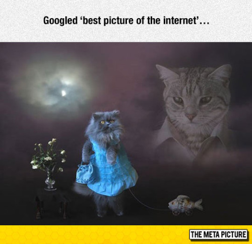

This is part eight of a multi-part post.
Fake News
Why do you include obviously proven fake and fabricated data in your manuscript? Don’t you think that it would detract from the content’s value?
No. The reader is advised to ignore what they cannot understand.
What might be garbage to one reader might be quite valuable to another reader. Everything is thrown in this blog. I have done so with a degree of carelessness bounding on criminality. As such some things that are included that a more cautious person or editor would have deleted.
I have tried to put passages in this written manuscript (blog) and borrowed from others with the understanding that there would be a risk involved. That risk would rely on the relative truth or falsehood of the borrowed passage. It’s a risk that once encounters every time they open up their web browser.
I believe in the 80/20 rule.
Which means that as long as I present SOMETHING, it is better to have the bulk of the content correct, even though others might find fault with a minority of issues. (Thus, the 80/20 rule.)
This in mind, the reader must please note that those who are searching for discrediting passages and concepts will find them, no matter how truthful and accurate they are. Searchers will find what they need, no matter what other people might think.
It is easy to discredit anything.
Just look at Google, Wikipedia, and Snopes. According to these organizations, there is only one reality; theirs. As such they will bend the truth; the narrative, and history to make their truth yours; the readers. What is real…well, that is decided upon by the reader. There are no perfect absolutes. Only relative absolutes pertaining to one’s occupied reality.
Time Travel
You say that you were not involved in time travel, yet how can you explain your “off world” experience where you were away for one entire week?
My probes did not permit me to conduct “apparent” time travel.
However, there might have been a way to do it, but I was not aware (or trained) in the method necessary.
As far as the “off world” event is concerned, I cannot comment on what exactly transpired as I was unconscious from the moment I entered the portal until the time I got up and left the table.
It might have been “apparent” time travel, or something else.
I present it as is, and let others who are smarter than I am, figure out what actually transpired. My personal opinion is that the fixed dimensional portal can permit dimensional travel with time variance. My core kit #2 probes has limited functionality in this regard.
The handout
In the “handout” that you filled out, you said that your favorite animal was a cat. Yet, you say that you like dogs. Which is it?
My favorite animal is a cat. They are independent, clean, and precise hunters.

However, I also like dogs. They are loyal, obedient, playful and make great buddies. I like both.
In fact, my house is a regular zoo with both dogs and cats.
We have considered getting a turtle, but no one has the patience to take it out for a walk (perhaps a little skateboard under the belly might speed it up).
We considered birds, but their life span is rather short (I hear.). Snakes? The wife says “No!”.
Ferret? Maybe, if we can find one in China.
Rabbit? I’m not a fan, but the wife thinks it might make a good companion for the dog. WTF?
It is useful to note that during the entire time that I was in MAJestic, I had cats. It wasn’t until after I left the organization and was retired that I started to own dogs again.
Alex Jones
Alex Jones says that the Globalists believe that they will be “gifted” with “special powers” that will be provided to them by inter-dimensional beings as long as they promote a satanic behavior and assist in large-scale depopulation efforts. Is this true?
I like Alex Jones.
However, I cannot pretend to guess the motivations of others. So I actually, have no idea.
What I do know is that all of the beings that I know of (although, only a mere few) are all of the “service to others” sentience.
Alex has framed his conclusions around the understanding or belief that Satanists are “service to self” sentience’s. While it is possible that one sentience can employ others of another sentience to perform tasks (for example the Mantids and the Type-I greys), I just cannot imagine that this impression is correct. (But I could very well be wrong.)
A more plausible explanation for the Globalist behavior is of a desire to create a chaotic environment for the purging of sentience strongholds. Thus, once the seeds of discord are planted, the “service of self” sentience can go ahead and create situations whereby they can profit from it.
Discovery
Give me a break will ya?
It has been reported that various elements of this manuscript; the unpublished elements, and the uncompleted elements, we discovered auto-saved in “the cloud”. Is this true?
Yes and no.
Numerous applications have tried repeatedly to copy information on both my laptop, and my cellphones to save backups “to the cloud”. These applications include WPS, and even Microsoft. I have rebuffed every attempt, including, but not limited to, disabling my wifi connection, and Internet access (on my editing computer).
In 2017, I moved all any papers and manuscripts to a dedicated computer that I physically disabled Internet access to. (Easy enough to do with a solder iron, and a pair of wire cutters.) That’s one of the things that I have to ability to do in this physical world. I can modify and hack all kinds of electronic hardware.
Then, I periodically physically move the files via USB to a second computer that uploads to a OneDrive “cloud” backup system. I have never used any other electronic backup system. There is nothing of value outside of this manuscript. Any stories that the reader might come across, no matter how plausible, are absolutely false, and should be ignored.
All official and valid documents are only associated with the Metallicman blog. Anything else is nonsensical.
A good smunch
You say that you like Chinese and Asian food (as a “foodie”), but you miss cheese and fresh tomato sandwiches. Isn’t that contradictory?
No. Not at all.
Chinese, Japanese, and Thai food are awesome. However, I do miss some American staples.
One thing that the reader must take into account is the great impact that the establishment of the Federal Reserve had on American culture. As the purchase power of the United States dollar declined, the quality of food that the average American consumed declined as well.
By the 1970’s the number of formal meals with quality meats and vegetables decreased substantially. In its place were super-processed foods, and foods (globally) considered to be “cheap eats”. These are basic and cheap food items consisting of wheat, ground up meat, and sugar flavored water. (And, as an aside, the typical American ballooned up into large obese pig.)
We began to look like pigs because we were eating (being fed by the mega-corporations) super-processed foods. Foods, I must add, that are functionally similar to what pigs and cows eat. Ouch!
In China, you can eat lobster, crab and steak for only slightly more than typical “American food fare”. (Don’t believe me? Go to LouHu, in Shenzhen China. Compare the prices between a lobster at a Chinese seafood restaurant, and the price of a Whopper at Burger King.) Identical!
Same size of meat by gram. Let’s be honest and compare by weight.
Yet, you certainly cannot do that in the United States. In the USA, lobster is for more expensive than a hamburger. (Try finding cheap ground up hamburger in China! Nearly impossible to find. Hamburger is ground up steak, and pricey as hell. Ugh!)
Typical foods consumed by Americans during the Obama Presidency consisted of the cheapest foods, often super-processed. Think people! Pizza is really just plain flour with simple tomato sauce and cheese.
A processed hamburger is ground beef (of the cheapest cuts) in a simple bun. French fries are only deep fried potatoes.
Most American ice cream is really ice-water with “enhancements” to make it taste like ice cream.
With the exception of the more pricey brands. Ben & Jerry’s ice cream is the real thing. So is Häagen-Dazs.
Bottled “spring water” is just “tap water” repackaged. Americans eat the cheapest foods, and that equates in the shortest life spans.
Coca - Cola Admits That Dasani is Nothing But Tap Water. https://www.commondreams.org/dasani-nothing-but-tap-water
It just seems that the American “Powers that be” are hell
bent, not only turning Americans into serfs, but making them eat, dress and act
like them as well. Fashions are all about torn clothes, rags (really), with
worn areas, and thread bare “enhancements”.
Americans Face Shorter Life Span Than the Rest of the world. http://www.aarp.org/health/brain-health/info-02-2013/americans-face-shorter-life-span.html
Food is the cheapest to make and distribute. Education teaches conformity, with zero independent thought, and zero civics and history lessons. Housing is now subsidized by the state (either directly through mortgages, or indirectly through Federal and state welfare programs of various types)…
So, why it is the same feudal model straight out of the books on the middle ages. (The king provided low quality shelter, and meager simple foods, to the uneducated peasants who worked the land.) Identical!
What is the difference, aside from technology, between a middle-ages serf and your typical American? Not much of substance, I am afraid. The only difference is that during the middle ages, the serfs had more free time, more holidays. Today we had electronic media to entertain us.
It has been widely lamented of late that the average worker is sinking into a state of near serfdom—especially with respect to onerous debt, dubbed “debt serfdom”, increasing work hours and the need to hold down multiple jobs, often at lower wages and salaries than previously held, expected or baby-boomer jobs. Whether or not this is an accurate portrayal of the lot of the average worker, to Millennials saddled with huge student loans, poor career prospects and a patchwork of multiple low-pay jobs or no-pay internships, this has to sound all too familiar and too much like what they imagine the lives of medieval serfs to have been. But, despite the negative popular image of serf lifestyles, the discovered facts of medieval serf life warrant asking whether having the work life and workload of a real serf would really be such a bad thing? Surprisingly, as some historical research—cited in the quote above and below—suggests, the answer may be “no”. “Manorial records from fourteenth-century England indicate an extremely short working year—175 days—for servile laborers”. — Juliet B. Schor This point is that medieval serfs had it BETTER than what Americans have today. Yes! Really. Go here; https://www.recruiter.com/i/serfs-up-modern-debt-serfdom-vs-the-enviable-leisure-time-of-a-medieval-peasant/
The Mrs Metallicman
What does your wife think of all this?
She doesn’t care.
She doesn’t want to know anything about it, because it all happened prior to us getting married.
She knows nothing.
All she knows is that I have these “things” inside my skull. And when I go to the hospital for a MRI she explains it away to the doctor as some kind of “experiment”.
Other than that, to her, it’s just a “tall tale” that I talk about when I am really drunk. She lets me type up my manuscript and keeps my beverage of choice filled beside me.
Depending on the day and time, it could be coffee, tea, VSOP, red wine or Jin Jiu.
The dogs, cats and children come by from time to time and say hello. The cat will jump onto the table and watch me type. The dog will curl up on a chair and look at me. Usually, the children share the same table with me as they are busy working their assignments. They are quite comfortable with that arrangement as it looks like we are both “studying” and doing our “assignments”.
What’s it like?
If I were standing next to you, and you dimensionally shifted to a different world-line what would I see?
You would see no difference.
That is because I will have changed my world-line within MY reality. But, you are not in my reality.
You have your own reality.
Since you occupy a different reality, what you would actually see would be my “quantum shadow” performing (what ever action fits your reality) a “something”. That “something” might be anything from disappearing from your reality, to absolutely no change what so ever.
Individual Realities
How confident or comfortable are you with the idea of individual separate realities, instead of a one single reality that we all share?
I am very comfortable with it, but that wasn’t always the case.
Initially, I could not reconcile the idea or concept that all these different realities all seem to fit within the same template. Which means, our separate realities both have mail boxes, drink lemonade, climb trees, and have roads.
However, that discomfort went away when I came to understand that all of our separate realities “cross-talk” to each other. They all share common elements.
You can call this a “shared template” if you wish, or a “level playing field” if that what helps you understand it.
FYI. Yes. There are multiple templates.
Reality template(s) are a function of what the communities of souls have already learned. It is a common functional aggregate of prior experiences for a given species.
Cross Talk
What do you mean by “cross talk” between world-lines?
World-lines cluster together.
The more similar a world-line is to another one, the greater the ability of one world-line to influence the other. This influence is what I refer to as “cross talk”.
It seems to me that MOST (but not all) of the human related world-lines cluster together and form groups or clusters of similar world-lines.
The more extreme the world-line, the greater the deviance from the cluster. And thus, the greater the influence of change when it is experienced by myself. (Not by the other world-lines themselves.)
Fate
How can our reality be fated if you can change it?
Once a reality is constructed by a given soul, the consciousness is “programmed” to inhabit that reality.
Within that reality, the consciousness can control and move the physical body about. There is all matter of control by the consciousness (through thought) to alter that reality. However, the overall results that the consciousness will experience will be fated by the initial conditions as set up by the soul.
Think of it like a quiz where every answer can be one of five choices. This is also known as a multiple-choice answer quiz. You have to take the quiz, but the choices before you are fixed. You might make all the bad choices, and “fail” the quiz. If you do so, you might need to take remedial classes, and retake the quiz. Otherwise, you can answer enough questions correctly to pass, and move on to newer classes and greater lessons. So, yes we live in a fated reality. It is structured, but how and what we learn is determined by our individual actions.
In other words, the soul creates a fated reality. The soul also creates a consciousness to experience and learn from the experiences generated by the thoughts manifest within that reality.
The conscious can alter and change that reality but ONLY within the constraints of the goals (lessons) of the soul.
However, in the case of large-scale mass thought-manipulation, the lessons setup by the soul can be confused and thwarted by the lessons and thoughts of other souls.
They don’t always work together in harmony, don’t you know. Individual souls have their own individual agendas. Therefore, to prevent this, world-line anchoring is desirable to keep all the individual consciousnesses segregated and working within their own individualized learning parameters.
So yes, we live in a fated reality. However, we have a great deal of control on what can happen within our reality.
Therefore, we enter this reality. We make decisions. We either learn enough to move forward, or we do not. If we fail to learn, we need to take remedial “classes” and retake the reality (in one form or another). That is how this “fated” reality works.
If the reality “quiz” is too hard, we might elect to escape (run out the room and leave the building) and kill ourselves. What happens? Boom! We have to retake the “class” in the same reality that we just left. We still need to learn the lessons and pass the quiz before we can move forward.
Sorry. There just isn't an easy way out.
World History
How can you possibly know what the history of the world is, when by your own admission you have been going in and out of different world-lines for decades?
That is correct.
I have been going in and out of different world-lines for decades. The one that I am in now, and the one that this manuscript is written in, is a different world-line than the one that I grew up in.
My best example of this is the differences in breakfasts. My “original” world-line reality had baked beans with eggs. This world-line reality has potatoes with the eggs.
It is different than the one(s) where I “studied” the history of our species, and of our galaxy. It is different than the one(s) where I was trained at China Lake.
While the reality world-lines kept on cycling, the truth is that the history that I was informed of remained pretty much unchanged (from an overview point of view). While all the world-lines were different, they pretty much fell under a similar template. I have reached the conclusion that many of the histories that I know about, and the documents that I have read have similar analogs in this world-line. This manuscript is based upon that assumption.
Oxia Palus Facilities
Why did you need the Oxia Palus <redacted>, when all you needed to do was to ask the Drone Pilot questions?
In the pure sense, I did not need to have any training. Once I was proficient in <redacted> and doing basic world-line slides, I could have well been left alone to live a normal life. But that is not what happened.
Because I was entangled I could think and ask questions. The Drone Pilot would answer them (not always, but for the most part).
I do not think that MAJestic was aware that that would happen when I was EBP entangled.
So, in other words, direct communication with the extraterrestrial manifested as a consequence of my entanglement. It was unplanned for, and due to the nature of the organization, no one else knew about this aspect of the program.
I do believe that MAJestic management believed that all of us in the program were taking risks.
They believed that in some way we risked our lives, memories and thoughts to an extraterrestrial species. Because of that, they wanted to equip us with whatever training or information they could so as to help us defend against the unknown.
To this end, <redacted> was established at Oxia Palus. It was put there by the MAJestic organization. However, it was rarely used. From what I could tell, it was used mostly by <redacted> from time to time.
Life after Death
Do you believe in a life after death?
This should be obvious. Yes, of course I do.
I, as the writer of this manuscript, consist as a consciousness that occupies this physical body. My consciousness whether in a particle state (attached to the physical body) or in a wave state (non-attached) will move about within this reality whether or not my body is “alive”.
None of that has to do with my soul. My soul is sort of the “home” for my consciousness. It lies outside of a reality that I now inhabit.
When I “die” my consciousness will change from a particle-form to a waveform. As such, it can then move about in the non-physical reality that surrounds this physical reality. If I am not careful, it will want to reoccupy other physical forms. As is the nature of this consciousness. It has grown accustomed to controlling a physical body within a physical reality. It is comfortable with it.
There is a pretty involved process involved in this, and I discussed it elsewhere. For now, let’s just keep it simple. Consciousness will tend to stay within a given reality (physical and non-physical) by its’ very nature.
Through conscious control, and (maybe) some help from non-physical “friends”, the consciousness will exit this manufactured reality (both the non-physical and the physical). It will travel outside of this world-line reality. (Not every consciousness does this. Those that artificially terminate their existence through suicide, and those of strong “karma” bonds will immediately search out nearby (physical, emotional or spiritual) locations to reposition their consciousness within.)
Suicide. They cycle back immediately and tend to occupy an “open slot” within the same friggin’ reality that they left. You cannot escape the reality that you are assigned. It is up to you to make the best of that reality and endure it. Only through completion of your learning exercise, within your reality, can you grow to a NEW reality in a NEW life. The reality that you occupy is set aside especially for you to learn from. You cannot parachute away from it. You need to endure it. That is how your soul grows, and like it or not, you must pass this stage to grow to the next level. So, make this life the best one that you can. Endure. Grow. Be good. Be kind. Think well. Think well and good thoughts. No matter how much trouble and strife; think good thoughts. Be kind. (Did I say that twice?) Be kind. Be thoughtful.
Once the consciousness leaves the reality and non-physical reality it can go “beyond”, and enter the realm of “Heaven”. As such, it will merge with the soul. In so doing, it will merge with other consciousnesses.
Then, depending on the growth concerns of the individual soul, it will be determined whether or not a new consciousness will need to be spawned. This will be to inhabit a new human body, or whether or not non-human growth is desirable.
That is my hope, at the very least; non-human advancement. I really do not want to go through being a human again. This life, while comfortable now, was very trying.
Use of Intention
You say that our consciousness resides within our own bubble of reality. If so, then why not simply change your reality by intention alone? You don’t really need a biological artifice to conduct world-line travel.
Bingo!
This is an absolute truth.
Yes, people can change their own reality by using intention. You simply verbalize what you want and it will manifest. It is not immediate, but in general it will take from six months to three years depending on your intensity of desire, strength of consciousness, and living situation. It works, and you don’t need to be a member of MAJestic to utilize this skill. All humans have this ability.

Try it.
- I have done [1] I have a big nice luxury car (which ended up needing a very expensive new transmission. Ouch!),
- [2] I will have a hot sexy girlfriend that will want sex with me all the time (yup. Happened, but that wanting to have sex meant that I had ED, at a time when Viagra was not available. It was very frustrating for my hot sexy girlfriend. The poor girl was very very frustrated.) LOL.
- Also [3] Live in China (duh), and many others. All manifest. It works. After all, we do exist in our own bubble of reality, and we CAN control the physical manifestations within it by our thoughts.
However you need to be careful what you intend upon. (Watch what you wish for, just like the story of Aladdin and his three wishes.) Don’t wish for specifics, they all come with a “price tag”. Sometimes the price is more than we can afford. It is part of our initial soul conditions when the reality was constructed.
Today, I still conduct intention verbalization. It is a part of my normal life. In general today I no longer ask for specific things. Instead I ask for the following. Note how I ask for it;
- I am happy.
- I am healthy and I eat well.
- Those around me are happy.
- I am secure.
- My finances are just fine and just what I need.
However, my role in MAJestic was NOT to alter my own personal reality. It was to alter the underlying “template” that all human beings base their realities off of.
To use a Microsoft word analogy; I did not change the *.docx file, I changed the *.dotx file.
To do so, I needed to be connected to a biological artifice that connected me to an extraterrestrial multi-dimensional being that “plugged it” into the underlying “code” that would enable this kind of transformation.
Unproven MWI
Why do you talk about world-line changes, when the MWI has not yet been proven?
Oh, it’s been proven all right. It’s just the people who know that it is proven are developing the technologies to traverse it. The rest of the world can go fuck themselves.
Let the others live their fantasies of a world without WMI.
They can have one where there is a God on a throne in Heaven, and if they die trying to kill a non-Muslim they would be rewarded with virgins with black eyes.
Alternatively they can live in a world where everyone is equal. (As if THAT is ever going to happen!) Like the “reality” in the movie ‘The lathe of Heaven”, where the hero creates a reality where everyone is “equal”, and there isn’t any racial discrimination. Answer; everything is grey and bland.
The Lathe of Heaven is a 1971 science fiction novel by American writer Ursula K. Le Guin. The plot revolves around a character whose dreams alter past and present reality. The story was first serialized in the American science fiction magazine Amazing Stories. The novel received nominations for the 1972 Hugo and the 1971 Nebula Award, and won the Locus Award for Best Novel in 1972. Two television film adaptations have been released: the PBS production, The Lathe of Heaven (1980), and Lathe of Heaven (2002), a remake produced by the A&E Network. George begins attending therapy sessions with an ambitious psychiatrist and sleep researcher named William Haber. Orr claims that he has the power to dream "effectively" and Haber, gradually coming to believe it, seeks to use George's power to change the world. His experiments with a biofeedback/EEG machine, nicknamed the Augmentor, enhance Orr's abilities and produce a series of increasingly intolerable alternative worlds, based on an assortment of utopian (and dystopian) premises: When Haber directs George to dream a world without racism, the skin of everyone on the planet becomes a uniform light gray. An attempt to solve the problem of overpopulation proves disastrous when George dreams a devastating plague which wipes out much of humanity and gives the current world a population of one billion rather than seven billion. George attempts to dream into existence "peace on Earth" – resulting in an alien invasion of the Moon which unites all the nations of Earth against the threat. Each effective dream gives Haber more wealth and status, until he is effectively ruler of the world. Orr's economic status also improves, but he is unhappy with Haber's meddling and just wants to let things be. Increasingly frightened by Haber's lust for power and delusions of Godhood, Orr seeks out a lawyer named Heather Lelache to represent him against Haber. Heather is present at one therapeutic session, and comes to understand George's situation. He falls in love with Heather, and even marries her in one reality; however, he is unsuccessful in getting out of therapy. George tells Heather that the "real world" had been destroyed in a nuclear war in April 1998. George dreamed it back into existence as he lay dying in the ruins. He doubts the reality of what now exists, hence his fear of Haber's efforts to improve it.
However, back to the point at hand.
Steve Jobs didn’t wait until the “experts” made a functional computer tool for artists. Albert Einstein didn’t wait until the “experts” proved that matter was energy.
There are technologies available to us right now. Just because some some “expert” isn’t promoting it on a widespread popular media platform does not negate that fact. That is the truth. It’s harsh, but it’s what is going on.
Yippie Kai Yay
How did the “Yippie- Kai-Yay” catch-phrase assist you in your dimensional anchoring activities?
It didn’t.
The catch phrase had a role, but it was not a mission specific role. Instead, the role was simply to remind me of my importance, or to remind me of the importance of my role.
Whenever I actually heard the phrase, I became stronger or more positive in regards to my personal feelings and situation.
The fact is, that during the times when I was an autonomous vagabond, I had a very difficult time coming to grips with not flying, or not being a spaceman. This was aggravated by my poverty-riddled situation and the difficulties that I had to endure. However, whenever I heard that phrase, my personality changed, and I became emboldened and recharged.
Without that trigger phrase, I do not think that I would have persisted though the extreme hardships that I experienced.
If you want to go to the start of this series of posts, then please click HERE.
MAJestic Related Posts – Training
These are posts and articles that revolve around how I was recruited for MAJestic and my training. Also discussed is the nature of secret programs. I really do not know why the organization was kept so secret. It really wasn’t because of any kind of military concern, and the technologies were way too involved for any kind of information transfer. The only conclusion that I can come to is that we were obligated to maintain secrecy at the behalf of our extraterrestrial benefactors.


MAJestic Related Posts – Our Universe
These particular posts are concerned about the universe that we are all part of. Being entangled as I was, and involved in the crazy things that I was, I was given some insight. This insight wasn’t anything super special. Rather it offered me perception along with advantage. Here, I try to impart some of that knowledge through discussion.
Enjoy.


Influencer Questions
Here are posts that have gathered a series of questions from various influencers. They are interesting in many ways and could help all of us unravel the mysteries of the lives that we live.
MAJestic Related Posts – World-Line Travel
These posts are related to “reality slides”. Other more common terms are “world-line travel”, or the MWI. What people fail to grasp is that when a person has the ability to slide into a different reality (pass into a different world-line), they are able to “touch” Heaven to some extent. Here are posts that cover this topic.


John Titor Related Posts
Another person, collectively known by the identity of “John Titor” claimed to utilize world-line (MWI egress) travel to collect artifacts from the past. He is an interesting subject to discuss. Here we have multiple posts in this regard.
They are;